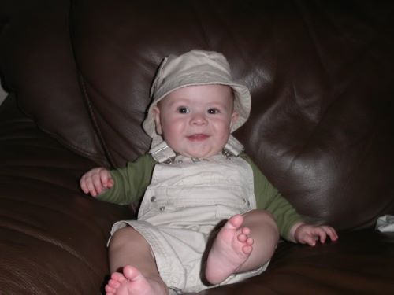
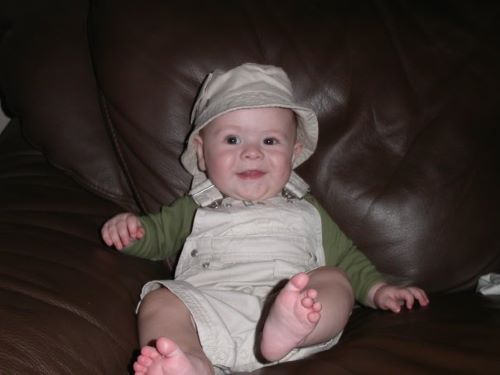

| Infant |
|
| I
was born in Charlotte, NC. I moved to Concord, only about an hour
away, at age one. My sister was born when I was two. Soon
afterwards, I enrolled in preschool. |
|
|
|
|

|
| Me as an
infant sitting on a chair. |
|
| Rackowitz, Todd (2005). Noah on a Chair. [JPG] Retrieved from https://www.facebook.com/photo?fbid=1050656720054&set=a.1050650719904 | |